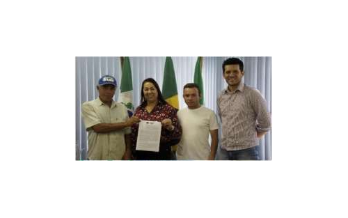
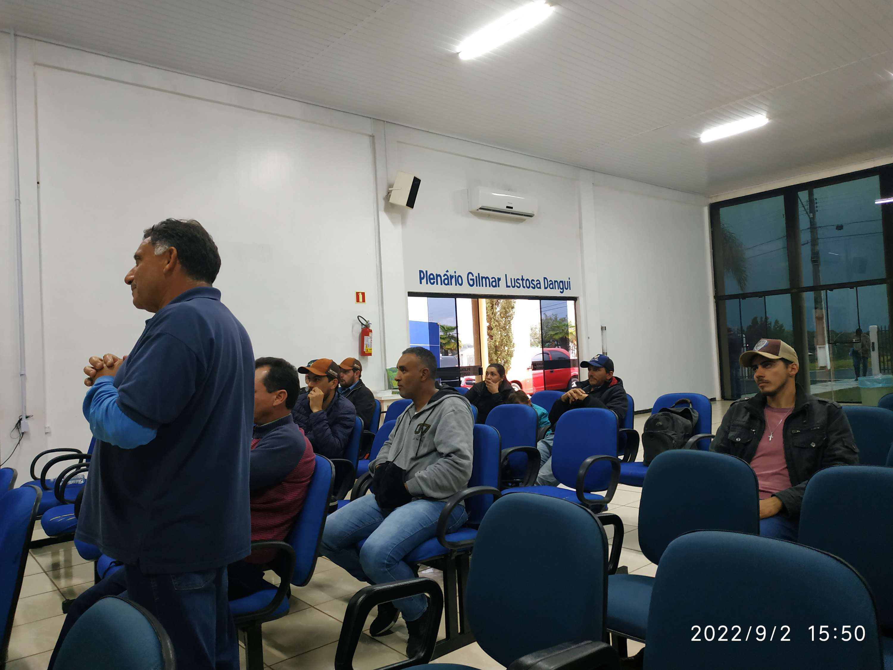
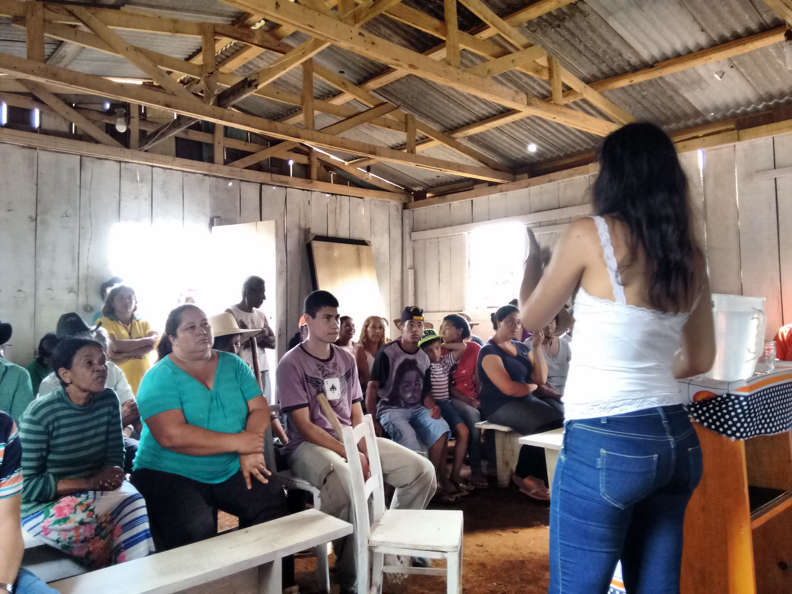
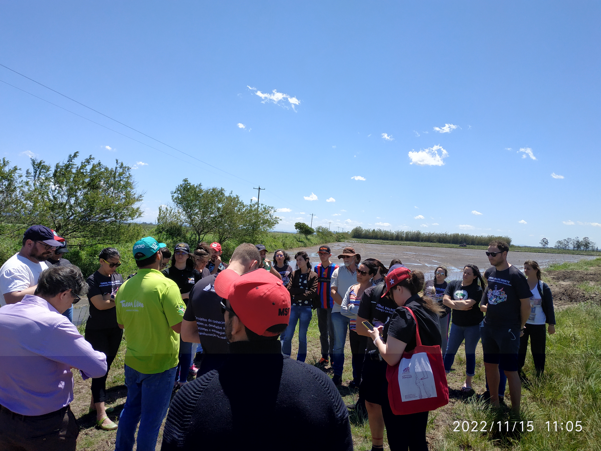
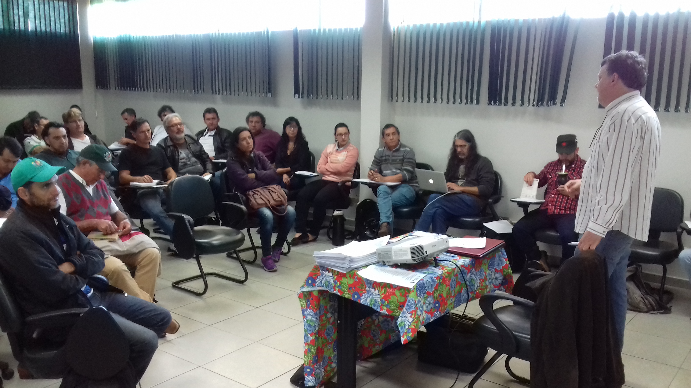
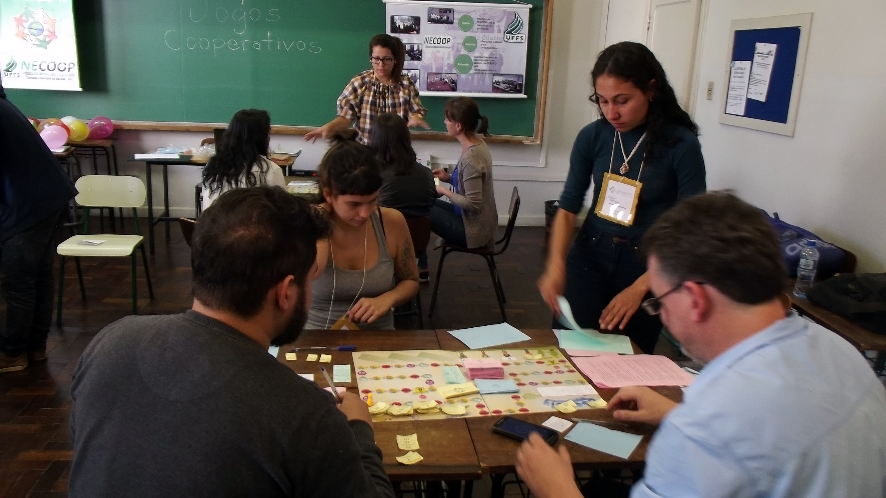
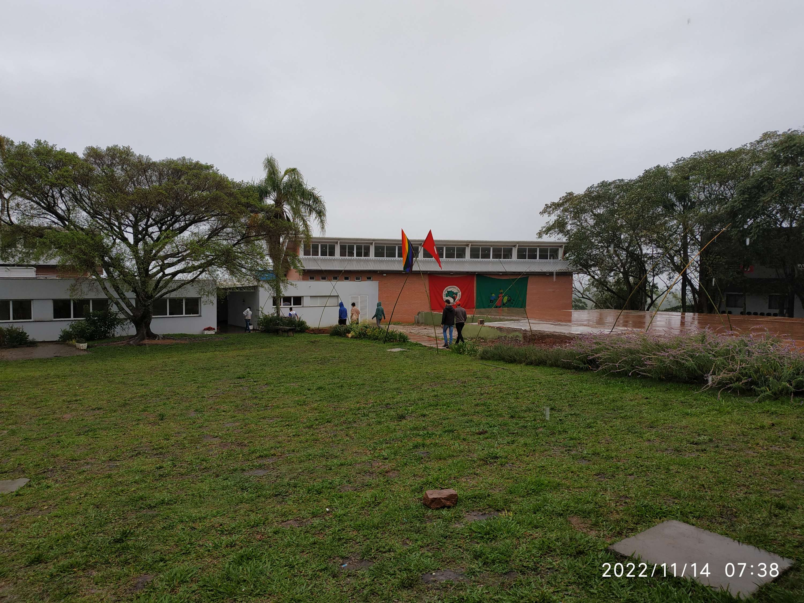
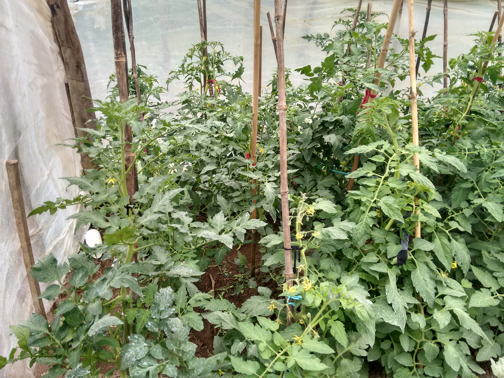

Áreas de atuação

Agroecologia

Reforma Agrária e Territórios
Formação como dimensão transversal

Formação
O NECOOP em movimento

Formação

Jogos Cooperativos

Intercâmbios

SPDH
Onde atuamos
Espaço reservado para a representação territorial das experiências, projetos e parcerias do NECOOP.